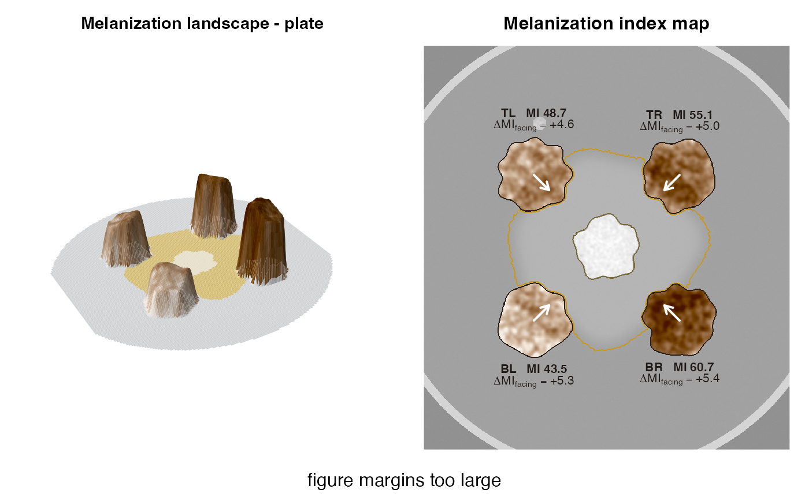

R/plot_landscape.R
plot_melanization_map.RdTurns a plate into a "melanization landscape". In 3D, each colony rises
from the agar with a height and colour given by its local melanization
index (MI = 100 - L*), so darker tissue forms higher, browner relief. The
bacterium and its halo are painted on the floor. In 2D, the same MI field
is drawn over a faded photograph, with the halo and bacterium outlined.
An arrow on each colony points to the bacterium and is annotated with
the side-specific response delta_MI_facing.
plot_melanization_map(
x,
type = c("both", "3d", "2d"),
mi_range = NULL,
smooth_mm = 0.25,
relief_smooth_mm = 1.5,
taper_mm = 2.5,
grid = 180,
theta = -30,
phi = 32,
expand = 0.3,
main = NULL
)A mycohalo_result computed with keep_images = TRUE.
"both" (3D + 2D side by side), "3d" or "2d".
Optional common MI range c(min, max) for colours and
heights. Fix it when comparing several plates.
Smoothing of the MI field (mm).
Smoothing (mm) of the MI field used for the 3D
heights (colours use smooth_mm).
Width of the rounded colony edge in 3D (mm).
Approximate number of grid cells along the longer side of the 3D surface (speed vs. detail).
Viewing angles of the 3D view (see graphics::persp()).
Vertical exaggeration of the 3D relief.
Title.
Invisibly, a list with the MI matrix used and the colour ramp.
The MI field is smoothed with a Gaussian of smooth_mm to show tissue-
scale structure (margins, sectors, facing-side darkening) rather than
single hyphal ridges. In 3D the colony edges are tapered over
taper_mm, so colonies look like rounded relief instead of cliffs. The
colour scale is a single-hue sepia ramp from light to dark, because MI is
a magnitude and melanin is brown-black. Heights and colours share the same
scale, set by the observed MI range (or mi_range).
sim <- simulate_plate(seed = 42, facing_darkening = 5, edge_lightening = 8)
res <- analyze_plate(sim$image, verbose = FALSE)
plot_melanization_map(res)
